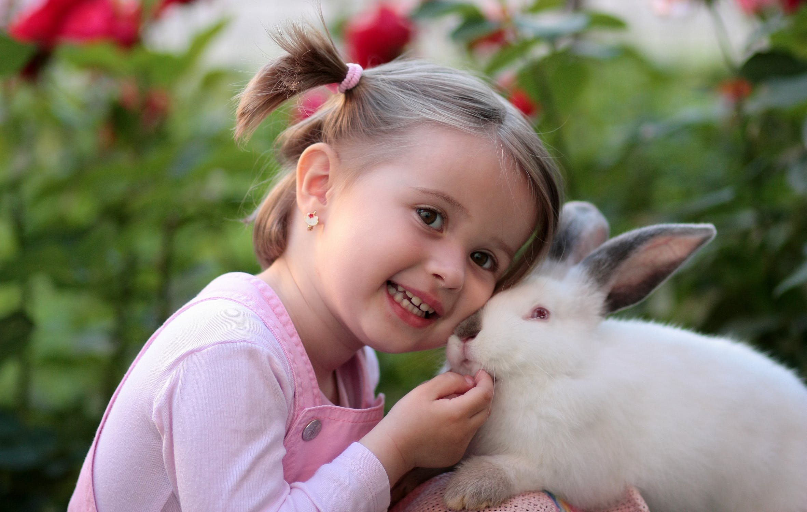

Caring for Rabbits

Rabbits are naturally sociable animals and enjoy lots of attention and company. But it might take your new rabbit a little while to get used to you and their new home. Remember, too, that in the wild rabbits can be attacked by predators, so they are naturally fearful of a sudden approach, especially from above.
- Place one hand under the chest.
- One hand supporting back legs.
- Hold gently but securely against your chest.
- Rabbits spines are fragile and can fracture easily. The hind legs need to be secure so they cannot kick out and damage their spine.
- Supervise and train children to hold your rabbit properly.
How to pick up your rabbit
Hay and grass should form the basis (80%) of your rabbit’s diet. The remainder of your rabbit’s diet should be fresh vegetables (15%) and a small amount of pellets (around 5%).
Hay is a vital part of a rabbit’s diet (do not confuse with straw which is for bedding only).
Provide a good-sized handful of fresh hay every day.
Hay provides fibre and helps wear down a rabbit’s teeth.
Purchase fresh hay from feed stores or some pet shops.
Make sure it is not damp, dusty or mouldy as this could cause respiratory illness.